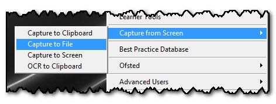

Capture to File

As well as copying the image to your clipboard, you can also save the captured screen as an image on your computer for later use. Do this by selecting "Capture to File"
You will then be asked for a location to save the image.